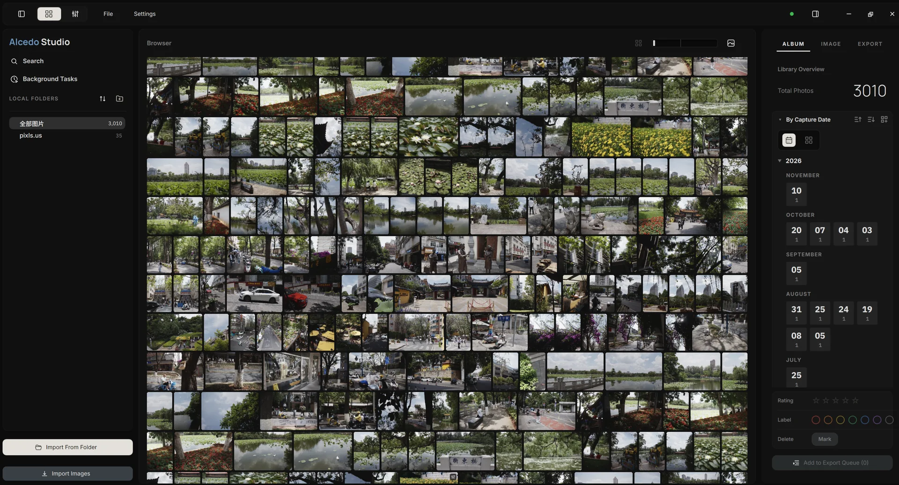
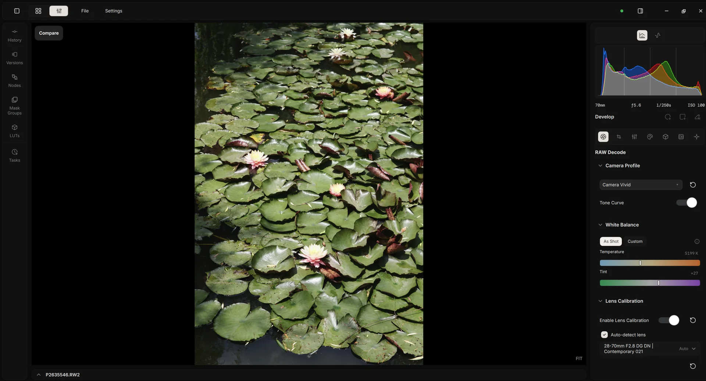
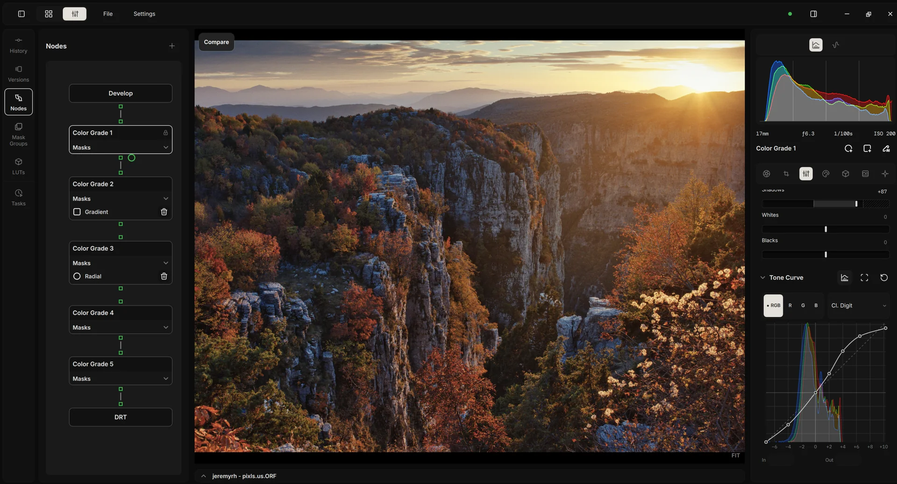
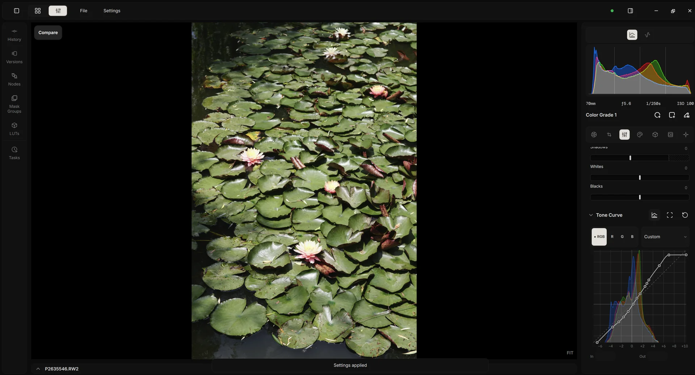
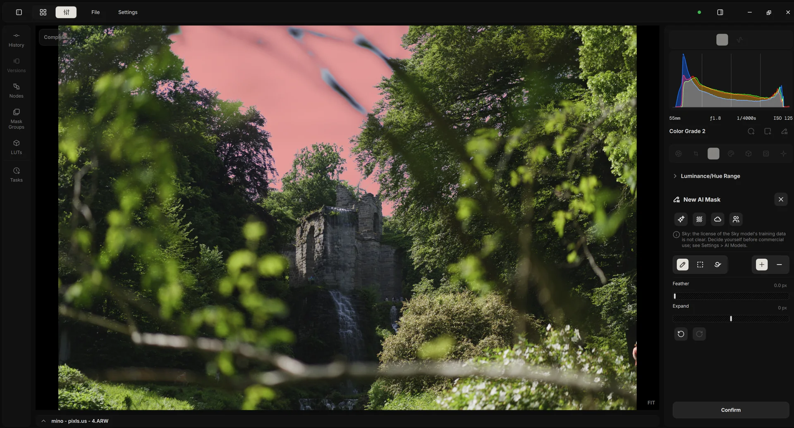
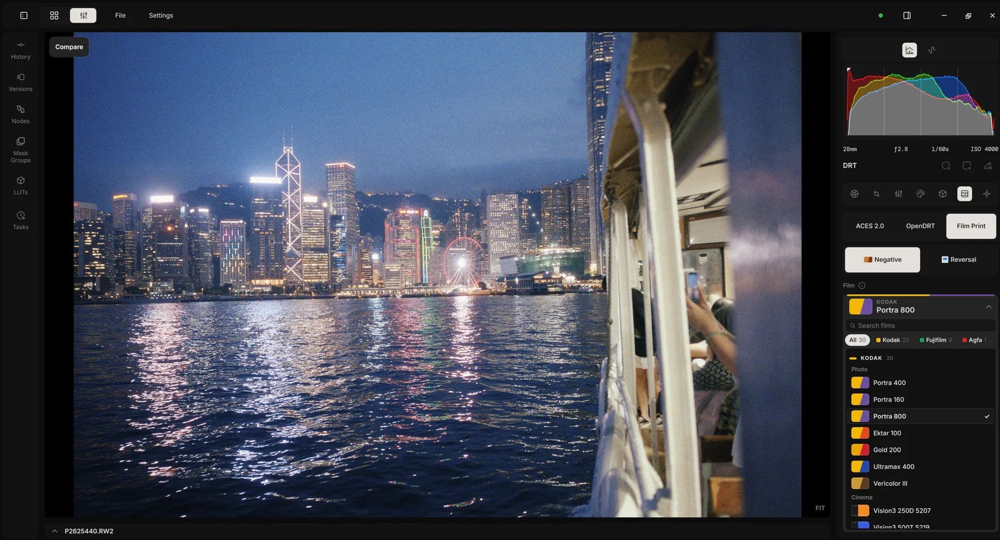
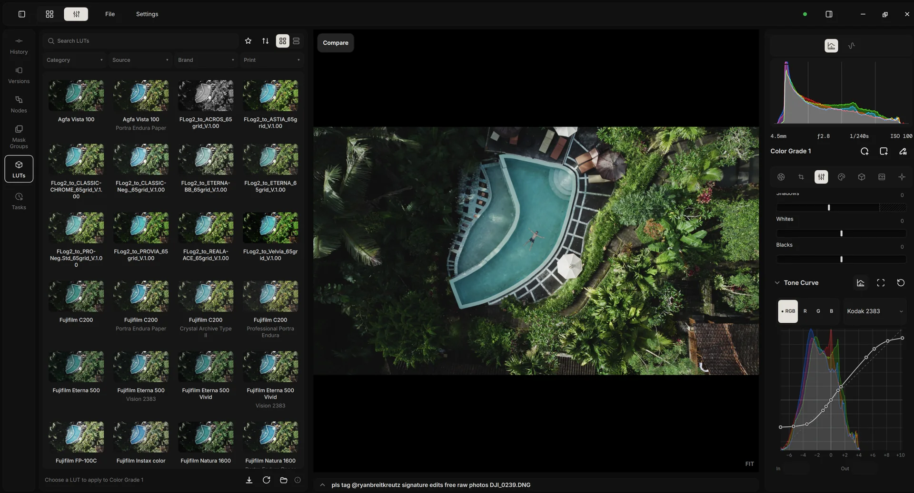
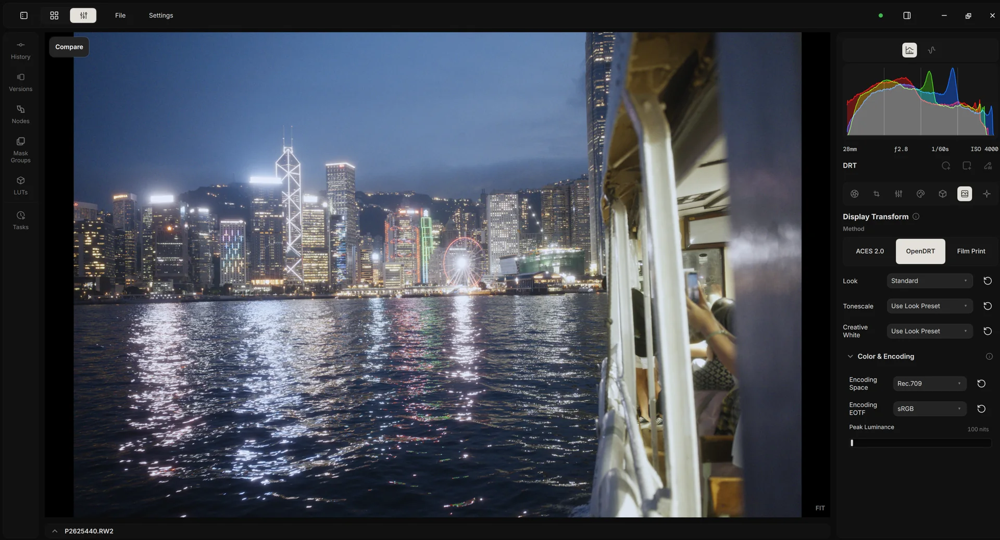
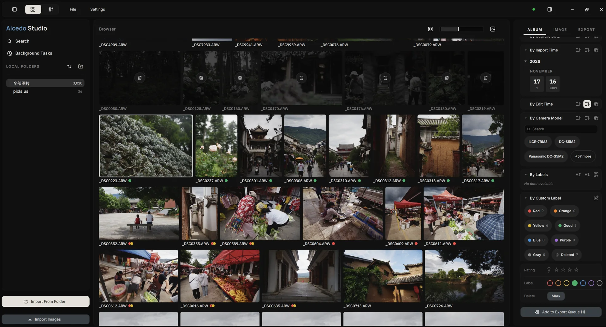
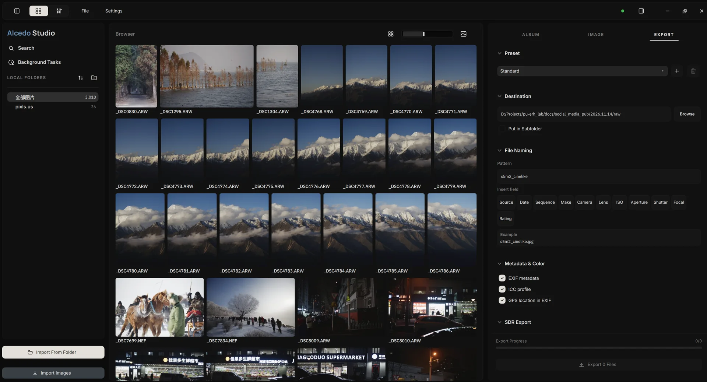

Features
All features of Alcedo Studio 0.3.6, by area.

RAW decoding#
Alcedo Studio reads RAW files with the project's fork of LibRaw.

- Cameras
- Canon, Nikon, Sony, Fujifilm, Panasonic, OM System, Leica, Hasselblad, Phase One (including the 150 MP IQ4), Pentax, Sigma, and DNG files from phones and drones. See the supported cameras and supported formats.
- Nikon HE
- High Efficiency NEF files from the Z 8, Z 9, Z 6 III, and Z 50 II.
- Camera color
- Camera color matrices, with spectral data from rawtoaces-data for some cameras. DNG files use their own HueSatMap and LookTable.
- DCP camera profiles0.3.6
- Set a DCP folder in Settings > LUTs and Color Management. The Camera Profile section of the RAW panel matches the profiles to the camera, and the tone curve of the selected profile loads into the Tone Curve. You supply the DCP files, for example the CameraProfiles folder of Lightroom Classic or the profiles of Adobe DNG Converter. The result can look different from Adobe Camera Raw and from the camera.
- Demosaicing
- RCD is the default for Bayer sensors. The Neural Engine is the default for X-Trans sensors and also works with Bayer files. It is a small neural network distilled from DemosaicNet that runs on the GPU.
- Highlight reconstruction
- Inpaint Opposed, adapted from darktable and RawTherapee.
- Lens correction
- Lensfun profiles for distortion, lateral chromatic aberration, and vignetting, with Lanczos-3 resampling. Auto mode finds the built-in lens of the Fujifilm GFX100RF, Ricoh GR III, and Ricoh GR IIIx.
- Other image files
- JPEG, PNG, TIFF, and OpenEXR. The embedded color profile converts the image into ACES. OpenEXR, PQ, and HLG images are marked as HDR.
Scene-referred color#
The image stays scene-referred in 32-bit floating point from decoding to the last step, where the display transform forms the picture for your display.
- Precision
- 32-bit floating point in all steps.
- Grading space
- ACEScc, with AP1 primaries.
- Display transform
- ACES 2.0, OpenDRT, or Film Print. For ACES 2.0 and OpenDRT, set the target color space, transfer function, and peak luminance.
- Output targets
- Rec.709, Display P3, and Rec.2020, with PQ and HLG.
- HDR preview
- On a Mac with an HDR display, the editor shows the HDR result (EDR).
- Windows color management0.3.6
- The editor, the comparison view, LUT previews, and the thumbnails of the Library, filmstrip, and search convert to the ICC profile of the monitor that shows them. Settings > LUTs and Color Management shows the profile in use.
- Contrast
- An S-curve on OkLab lightness. It keeps brightness and hue.
Node-based editing#
The edit of each photo is a node graph. Each Color Grade node has its own adjustments and its own masks.

- Node chain
- Develop → any number of Color Grade nodes → Display Transform.
- Develop
- RAW decoding, white balance, lens correction, and crop. Its result is the scene-referred image.
- Color Grade
- Tone, tone curve, color wheels, selective color, detail, and masks. A Color Grade with masks changes only the masked area.
- Display Transform
- ACES 2.0, OpenDRT, or Film Print.
- Node editing
- Add, connect, rename, select several, and delete nodes. Each change is a history step and is saved with the version.
- Hide a layer0.3.6
- The eye button on a Color Grade row hides it, and a hidden layer is not processed. A Color Grade without connections stays in the document.
- Lock
- The default grade layers are locked. You can lock any layer.
Adjustments#
The adjustments of the selected node are on the panel at the right of the editor.

- Tone
- Exposure, contrast, highlights, shadows, whites, and blacks. Highlights and Shadows use local tone mapping.
- Tone math0.3.6
- The Shadows lift keeps black, so strong lifts do not make the shadows grey or brighter than the midtones. Whites and Blacks change only their own side of middle grey, by up to 3 stops. Shadows and Highlights apply before the Tone Curve.
- Sliders0.3.6
- Each slider has a value field and resets on a double click. Exposure drags from −5 to +5 EV and accepts −10 to +10 EV. Highlights accepts down to −150 and Shadows up to +150.
- Tone curve0.3.6
- An RGB curve and separate red, green, and blue curves. The plot shows the histogram of the curve input and stop marks from middle grey. A right click removes a point.
- Curve presets0.3.6
- Linear, Soft Contrast, Medium Contrast, Strong Contrast, Cl. Digit, and curves sampled from Kodak 2383, Velvia 50, and Ektachrome E100.
- Default look0.3.6
- New RAW imports use Cl. Digit, a curve shaped after the RawTherapee default curve. In Settings > Default Behavior > RAW Import, set the exposure, saturation, curve preset, display transform, and lens correction of new RAW imports.
- Color wheels
- Lift, Gamma, and Gain for shadows, midtones, and highlights, and Offset for all tones. Master values are in EV.
- Selective color
- Adjust colors by hue range. The rails show the colors of the selected hue.
- Detail
- Clarity and sharpening.
- Crop and rotate
- The crop frame is the output image. Rotate from the zones outside the corners of the frame; a finer grid shows while you rotate. The aspect setting is saved with the crop.
Masks and AI Masks#
A Color Grade node can have several masks. Its adjustments apply only inside them.

- Mask types
- Linear gradient, radial gradient, and AI Mask.
- AI Masks
- Select the subject, background, sky, or people with one click, or any object with points, a drawn path, or a box. Add and subtract selections, include or exclude individual people, and set Feather and Expand. A red overlay shows the selection.
- AI Mask steps
- The AI Mask tool has its own Undo and Redo. Confirm saves the result as one history step. Saved AI Masks stay in the project and render without the models.
- Luminance/Hue Range
- Restrict any mask by brightness and hue, with two-handle bars, number fields, softness, and a saturation threshold.
- Show selection
- Shows the area that a mask covers. It is on by default for each mask.
- Mask controls
- Position, radius, rotation, inner and outer feather, opacity, and invert.
- Mask groups
- The Mask Groups panel shows each Color Grade as a group, with a thumbnail of each mask.
Film Print#
Film Print is a spectral film simulation that is used as the display transform. How Film Print works (in Chinese).

- Method
- Film Print reconstructs a spectrum for each pixel, exposes each film layer through its spectral sensitivity, adds light spread and halation, and develops the layers along their characteristic curves with interlayer inhibition.
- Negative films
- 30 color negative films: 20 Kodak, 9 Fujifilm, and 1 Agfa.
- Reversal films
- Fujichrome Velvia 50, Velvia 100, Provia 100F, Astia 100F, and Kodak Ektachrome E100, viewed on a light table.
- Print any negative on one of 18 photographic papers and cinema print stocks, such as Kodak Endura Premier, Kodak Vision 2383, and Fuji Crystal Archive. Cine Look (Kodak Vision 2383) is a separate option. The output is Rec. 709 SDR.
- Negative Scan
- A virtual scanner reads and inverts the negative, and OpenDRT forms the SDR or HDR picture. Adjust scan exposure, contrast, cyan, magenta, yellow, and black. Neutral auto color keeps the balance of the full frame while you zoom and pan.
- Scene Light
- As Shot by default. It follows the temperature and tint of the RAW white balance.
- Film format
- 16mm, 35mm, or 70mm. The format sets the grain size relative to the frame. Smaller formats also enlarge light spread and halation.
- Grain
- Forms in the film layers before printing or scanning, from the granularity data of the stock.
- Stock browser
- Filter the stocks by process and brand. Each stock shows a color swatch.
- Film data
- The digitized datasheets of spectral_film_lut and the Astia 100F profile of fotufilm (CC BY-SA 4.0). The data is included in the installer.
- GPU
- CUDA, OpenCL, and Metal.
LUTs and finishing#
Use the 113 film LUTs of the official packages or your own 3D CUBE LUTs, in any color encoding.

- Film LUTs
- 113 LUTs in the Spectral Film LUT and spektrafilm packages. Download them in Settings > LUTs. Their signatures are checked.
- Your LUTs
- .cube files in the user LUT folder show under User. LUTs in nested folders are found.
- Encodings
- 50 scene and display encodings for the input and output of each LUT, such as ACES, ARRI LogC3 and LogC4, Canon Log, Fujifilm F-Log and F-Log2 C, Panasonic V-Log, Nikon N-Log, Apple Log and Apple Log 2, DaVinci Intermediate, Cineon, sRGB, BT.1886, PQ, and HLG.
- Display-encoded LUTs
- When a LUT outputs a display encoding, the ACES 2.0 inverse output transform brings the result back into the scene space.
- Saved encodings
- Alcedo can store the encoding pair of a LUT. Copied adjustments keep the pair.
- LUT browser
- Grid or list. Filter by category, source, brand, and print stock. Grid tiles preview each LUT on the open photo. Strength from 0 to 100%.
- Grain
- Based on Realistic Film Grain Rendering (IPOL 2017). Strength from 0 to 200%. The grain scale stays the same as you zoom.
- Halation
- A red glow around edges with high contrast.
- Diffusion
- A black mist filter. Bright lights get a soft glow, and midtone detail stays sharp.
Render engine#
Edits run as a graph on the GPU in 32-bit floating point. The preview updates while you drag and renders at full quality when you release.

- Windows
- CUDA for NVIDIA GPUs with compute capability 6.0 or later. OpenCL for other GPUs.
- macOS
- Metal on Apple Silicon.
- Caching
- RAW decoding and geometry results are cached by revision. Color Grade nodes run again on every change.
- GPU memory
- Color Grade nodes write to two RGBA32F buffers in turn, so memory does not grow with the number of nodes. Demosaicing, highlight reconstruction, and local tone mapping share one memory pool that is released after rendering.
- Preview size
- 2560 px on the long edge while you drag, 4096 px at rest. When you zoom in, only the visible region renders, at 1:1.
- One pipeline
- The preview, thumbnails, analysis, and export use the same pipeline. Thumbnails and export use their own GPU resources, so they do not slow the preview.
- Scopes
- Histogram and RGB waveform, with filled channels and clipping marks.
Library#
The library is a DuckDB database inside one project file.

- Project file
- One .alcd file holds the folders, metadata, search indexes, and the full edit history of every photo. To back up a library, copy the file. Projects with databases over 2 GiB open, and saves stream the database.
- Import
- RAW, JPEG, PNG, TIFF, and OpenEXR. Choose the file types for each folder. Files are recognized by content.
- Drag to import0.3.6
- Drag files or folders onto the Library or onto a collection.
- Layouts0.3.6
- Justified rows show the photos in rows of one height and keep each photo's shape. Camera, exposure, date, labels, and rating show on hover. Switch to the Classic grid in Settings > Language / Theme.
- Album inspector
- Group the photos by date, camera, lens, label, and rating, and select a group to filter. Sections fold, and Camera, Labels, and Lens have a search field.
- Collections
- Nested collections in a tree. Create and rename in place, drag to move, and see photo counts.
- Ratings and marks
- Star ratings and edit marks on the photo cards. On larger cards, click a star to rate.
- Color labels0.3.6
- Seven color labels with your own names, and a Delete mark. Filter with By Custom Label. Set labels, the Delete mark, and ratings for the whole selection in the Inspector.
- Sort and group
- By any field, import day, capture time, or last edit time. Groups fold and unfold.
- Shooting heatmap
- A year of shooting activity. Click a day to filter.
- Speed0.3.6
- In a 2,943-photo library, one scroll step in Justified rows takes 4.6 ms, and cached thumbnails return in 3 ms after a zoom.
Search and AI labels#
All search runs on your computer.

- Metadata search
- Camera, lens, date, ISO, focal length, aperture, shutter speed, and rating, in any combination.
- Search terms
- "6.7" means June 7. "iso800" does not match ISO 8000. "dng" is a file type. Several terms must all match.
- Natural-language search
- Multilingual CLIP models with an HNSW vector index. Download and turn them on in Settings > AI Models.
- AI labels0.3.6
- Labels are generated from the camera previews, about 16 times faster than in 0.3.5: 131 photos per second on an RTX 3080 Laptop GPU. The editor frees its GPU memory while labels are generated.
- Search palette
- Recent searches, commands, filters, and photo previews in one window. Enter applies the search to the Library.
- Search speed
- In a 20,000-photo library, the live preview takes about 12 ms and an applied search 13 to 21 ms, on a background thread.
History and versions#
Every adjustment is a step in a Git-like history that is saved in the project file.

- Versions
- Several named versions for each photo. Branch a new version from any step of the history.
- Undo
- The history is saved in the project, so you can undo steps after a restart.
- Compare
- Before and after, or two versions. Side by side or with a divider, left and right or top and bottom.
- Copy adjustments
- Copy a full look, or select versions, nodes, or single settings, including RAW decoding, white balance, lens correction, and crop. Pasting to many photos runs in the background.
- Shortcuts
- You can change the keyboard shortcuts. Conflicts are checked.
Export#
Export uses the same pipeline as the preview.

- Formats
- JPEG 8-bit, PNG 8 or 16-bit, TIFF 8, 16, or 32-bit, OpenEXR 16 or 32-bit float, and Ultra HDR JPEG.
- Presets
- Standard, Web, Social Media, Email, Maximum Quality JPEG, 16-bit TIFF, and EXR Archive, or your own. A preset sets every option except the destination.
- Size
- Original, long edge, bounding box, or print size with DPI.
- File names
- Source name, date, camera, lens, aperture, shutter speed, ISO, rating, and a sequence number.
- Metadata
- Keep or remove EXIF, the ICC profile, and GPS separately. Camera and lens serial numbers and the edit history are never written.
- Export queue
- Add to Export Queue opens the Export tab. A photo can be queued again after an export.
- Destination
- The last export folder is remembered after a restart.
alcedo-cli and AI agents#
alcedo-cli installs with Alcedo Studio and has a command for each action of the interface. Scripts, terminals, and AI agents such as Claude Code and Codex use it. Command reference.
- Projects and library
- Create, open, and save projects. Import folders. List, rate, label, select, and delete photos. Read metadata and thumbnails. Search, including natural-language search.
- Editing
- Open photos. Read and set any adjustment, or several in one step. Edit nodes and LUTs. List Film Print stocks. Undo, redo, and read the history.
- Versions
- Create, branch, switch, rename, and delete versions. Copy and paste adjustments between photos.
- Output
- Render previews, export with the options of the export panel, and follow background tasks until they finish.
- Sessions
- A headless session runs in the background for batch work. An agent can also work in the window that you use.
- Control
- While an agent works in your window, your edit controls are locked. Pan, zoom, and scopes stay available. Stop ends the agent's control at once.
- History
- Agent edits are marked in the history with the agent's note. You undo them as you undo your own edits.
- Data format
- Commands take and return JSON.
alcedo-cli schemalists the parameters and results of each command. - Alcedo skill
- The alcedo skill in zidage/alcedo-skills teaches an agent the commands and a loop of preview, inspect, and adjust. In Claude Code, run
/plugin marketplace add zidage/alcedo-skillsand/plugin install alcedo@alcedo-skills.
AI models#
The AI models run on your computer. Download them in Settings > AI Models, where each model shows its license, size, and download progress.
- AI Masks
- SAM 2.1 (Hiera tiny) for points, paths, and boxes. S3OD with a DINOv3 image encoder for Subject.
- Search and labels
- Multilingual CLIP models.
- Loading
- Models load when a tool needs them.
- Sky model
- The license of its training data is not clear. Read the model information before commercial use.
Application#
General features of the application.
- Languages
- English and Simplified Chinese.
- Welcome screen
- The most recent project shows as a preview, with a cover of its first photos, the photo count, the count of edited photos, and the capture date range.
- Background tasks
- A status lamp in the top toolbar opens to show a running task or an error. Click the lamp to open or close it.
- Logs
- Settings > About opens the log folder. Old log sessions are removed.
System requirements#
Alcedo Studio runs on 64-bit Windows and on Macs with Apple Silicon.
- Windows
- Windows 10 or 11, x64. CUDA needs an NVIDIA GPU with compute capability 6.0 or later. Other GPUs use OpenCL.
- macOS
- macOS 13.3 or later on Apple Silicon (M1 or later), with Metal.
- Memory
- 8 GB at least. 16 GB or more for large libraries.
- Downloads in the app
- AI models and film LUTs are separate downloads in Settings.
- Upgrading to 0.3.6
- Photos edited in earlier versions with Shadows, Highlights, Whites, Blacks, or the Tone Curve can look different. Projects from 0.2.9 or earlier do not open in 0.3.
Open-source components#
Alcedo Studio is released under GPL-3.0-only and uses these projects. The full list and the licenses are in THIRD_PARTY_NOTICE.txt.
- RAW and metadata
- LibRaw, Lensfun, Exiv2.
- Images and data
- OpenImageIO, OpenCV, OpenColorIO, DuckDB.
- Interface
- Qt, QuickQanava.
- Color
- ACES 2.0 output transforms (aces-core), OpenDRT by Jed Smith, rawtoaces-data.
- Film
- spectral_film_lut by Jan Lohse, spektrafilm by Andrea Volpato, fotufilm-engine, Realistic Film Grain Rendering (IPOL 2017).
- AI
- SAM 2.1, S3OD, DINOv3, CLIP.
- Demosaicing
- RCD by Luis Sanz Rodríguez, DemosaicNet (Gharbi et al., 2016).
- Highlights
- darktable, RawTherapee.
- Trademarks
- ACES is a trademark of A.M.P.A.S. Alcedo Studio is an independent project and is not affiliated with or endorsed by A.M.P.A.S., the Academy Software Foundation, Jed Smith, or the other authors named here. Film names such as Kodak and Fujifilm are trademarks of their owners and identify the films that Film Print simulates.
Photo credits#
The backgrounds of this site are screenshots of the Alcedo Studio editor. Photos from discuss.pixls.us are used under the CC BY-SA 4.0 license, and the screenshots that show them are shared under the same license.
- Arches National Park (Utah, USA)
- by LaurentFromSF, discuss.pixls.us, CC BY-SA 4.0.
- Canyon at sunset
- by jeremyrh, discuss.pixls.us, CC BY-SA 4.0.
- Aqueduct in the Bergpark
- by mino, discuss.pixls.us, CC BY-SA 4.0.
- LUT browser
- photos by Ryan Breitkreutz (@ryanbreitkreutz), from the free RAW photos of Signature Edits.
- Other photos
- by the Alcedo Studio developer.